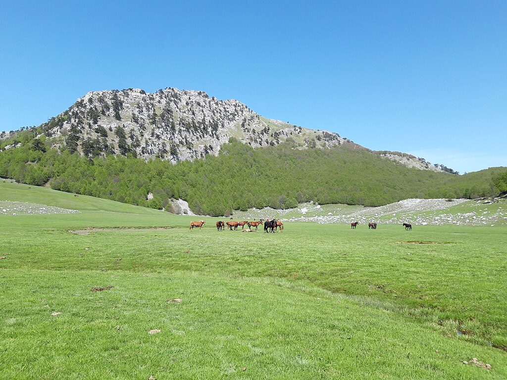
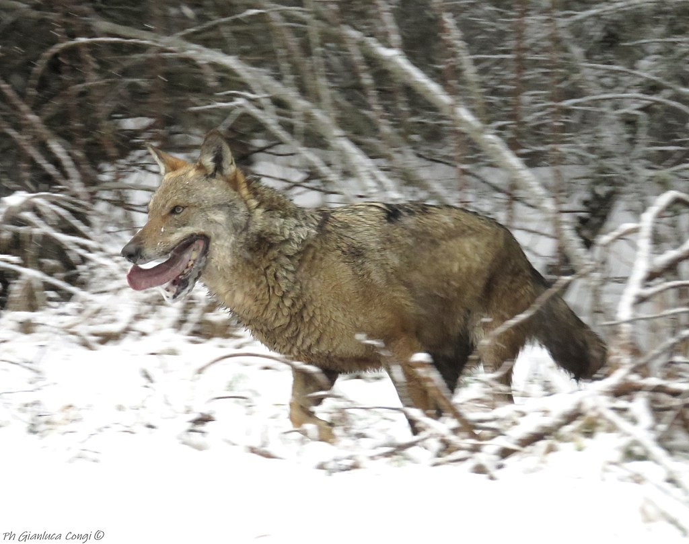
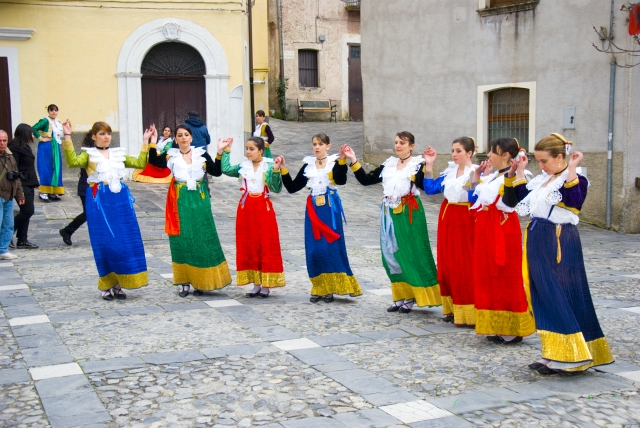

Parco Nazionale del Pollino

Un’area montuosa tra Basilicata e Calabria, con pini loricati, gole profonde e panorami mozzafiato.
Il Parco Nazionale del Pollino, istituito nel 1993, è il parco nazionale più grande d’Italia, con una superficie di circa 192.000 ettari. Situato tra la Basilicata e la Calabria, il parco prende il nome dal Massiccio del Pollino, una catena montuosa che raggiunge la sua massima altezza con il Monte Serra Dolcedorme (2.267 metri). Questo parco, caratterizzato da una natura selvaggia e incontaminata, è un autentico scrigno di biodiversità, paesaggi mozzafiato e tradizioni culturali radicate.


